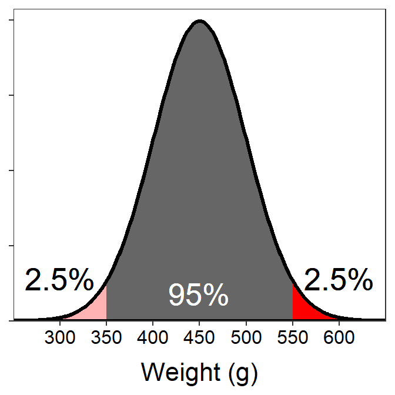

Wood Duck Weights
- The percentage of wood ducks that weight between 350 and 550 g is 95%.
This follows directly from the middle part of the 68-95-99.7% Rule because 350 is exactly 2σ below μ and 550 is exactly 2σ above μ.

- The percentage of wood ducks that weight more than 550 g is 2.5%.
We see that 550 is exactly 2σ above μ. Thus, there is 95% between 350 (2σ below μ) and 550, 5% outside of that range, and 2.5% in each tail outside of that range. Thus, 2.5% are greater than 550.

- XXX